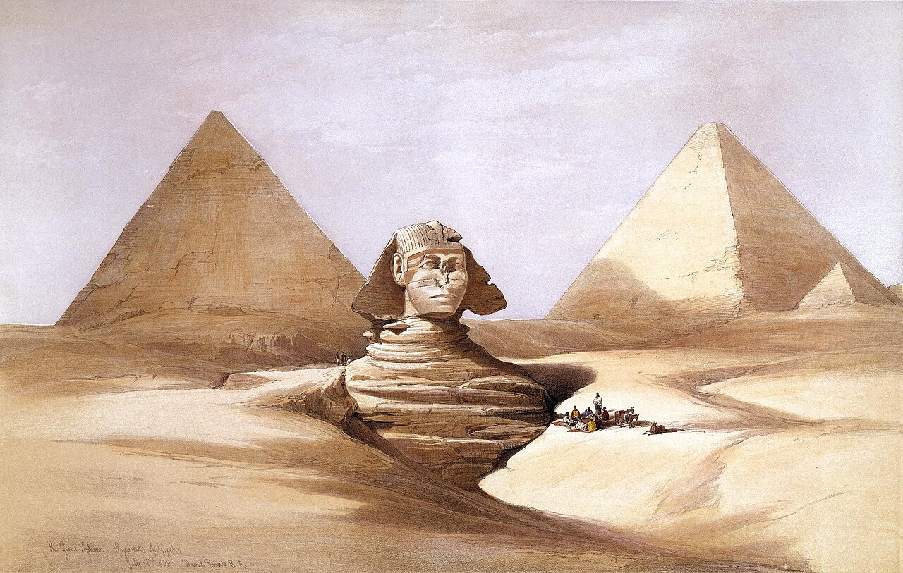

Египет

Египет — история в масштабе пирамид: у подножия Хеопса вы понимаете, что фотографии врут — они не передают размер. Пирамиды Гизы и Сфинкс — на утро; лучшее время для поездки — с октября по апрель, чтобы не плавиться. Луксор — музей под открытым небом: Карнак с колоннами по 23 метра и Долина царей, где стены расписаны красками, пережившими три тысячи лет; идите на рассвете, до жары и до групп. Абу-Симбел — отдельное чудо: в 1960-е храм Рамсеса II распилили на блоки и подняли выше уровня будущего водохранилища — инженерный подвиг рядом с архитектурным. Красное море — второй слой отпуска: кораллы в двух шагах от берега, маска и трубка с первого дня, дайвинг в Рас-Мохаммеде, где рыбы весят всеми цветами радуги. Чаевые «бакшиш» — держите мелочь наготове: это местный социальный инструмент, а не взятка. Композиция дня проще некуда: культура утром, коралловые рифы после обеда — такого сочетания нет больше нигде.
Что знать перед поездкой
- Красное море — маска и трубка с первого дня
- Луксор — на рассвете, без жары
- Чаевые «бакшиш» — держите мелочь